2019年二季度居民消费价格预期调查报告
参加2019年二季度居民消费价格预期调查的专家及相关专业人士309人，收回有效问卷309份。与上期居民消费价格总水平和主副食品价格缓涨预期相比，本期均以稳中缓涨预期为主；与去年同期相比，本期居民消费价格总水平预期变化不大，主副食品价格上涨预期上升，平稳预期下降。受房地产市场下行压力影响，部分地区房地产调控出现微调和松动，楼市开始回暖，影响商品房价格预期。与上期相比，本期商品房价格上涨预期明显回升，仍保持稳中缓涨的预期，低于去年和历史同期（调查期）预期。
一、居民消费价格总水平上涨预期下降，呈稳中缓涨预期
与2019年一季度相比，预计二季度居民消费价格总水平上涨149人，占比48.22%，其中预计缓和上涨138人、明显上涨11人，分别占92.62%、7.38%；预计基本持平142人，占比45.95%；预计有所下降18人，占比5.83%；无人预计明显下降。
调查结果显示，预计居民消费价格总水平上涨的人数减少至不到半数，其中预计缓和上涨的超过九成；预计居民消费价格总水平基本持平的人数超过四成，与预计上涨人数接近。约九成的人预计居民消费价格总水平稳中缓涨。
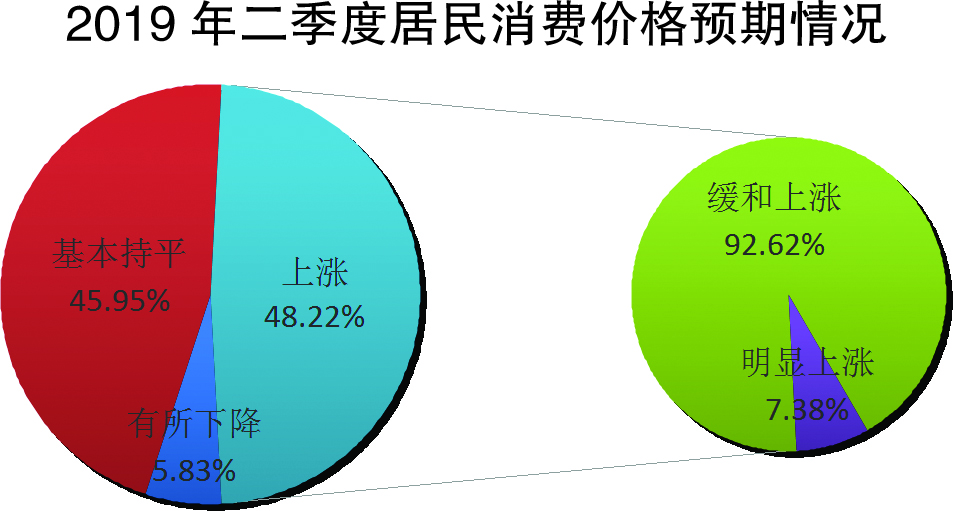
从居民消费价格总水平预期走势看，二季度（本期）居民消费价格总水平预期和往年同期走势一致，上涨预期较上期迅速下降，比上期的70.27%减少了22.05个百分点；和去年同期的48.62%相比，本期上涨预期基本不变，仅减少0.4个百分点。
与上期27.33%的人预计居民消费价格总水平基本持平相比，本期增加18.62个百分点；与去年同期的41.44%相比， 本期变化不大，增加了4.51个百分点。
本期预计居民消费价格总水平下降的人数仍占极少数，与上期的2.4%相比，增加了3.43个百分点；与去年同期的9.67%相比，本期减少3.84个百分点。
调查表明，与上期大多数人预计居民消费价格总水平上涨相比，本期居民消费价格总水平以稳中缓涨预期为主；与去年同期相比，本期基本没有变化。
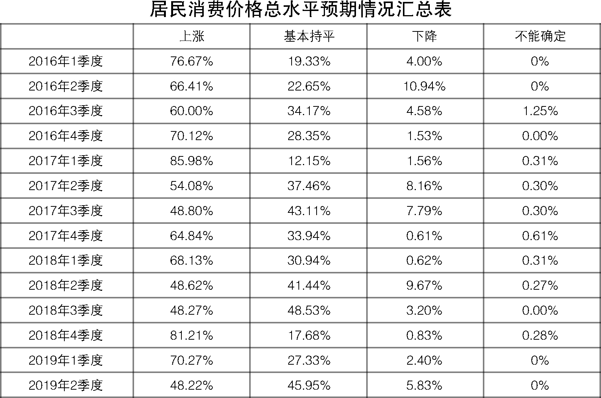
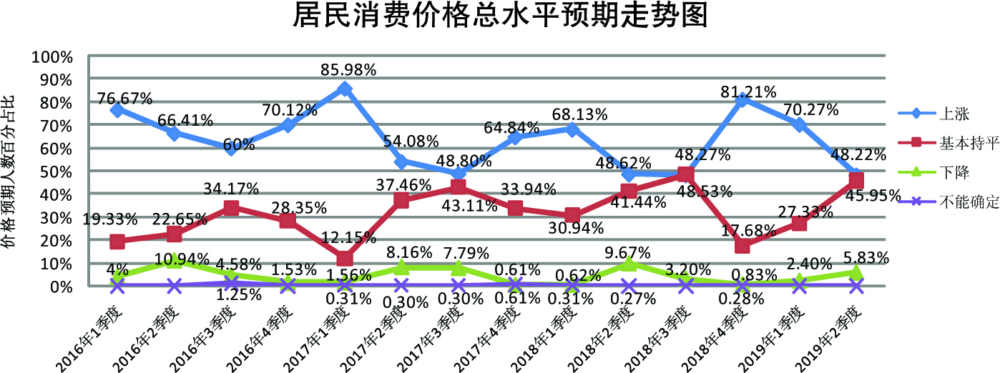

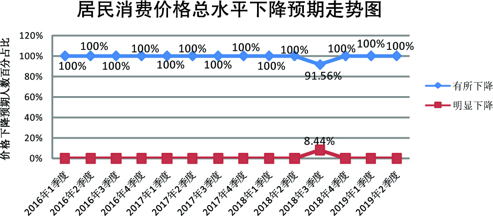
二、主副食品价格上涨预期下降，呈稳中缓涨预期
与2019年一季度相比，预计二季度主副食品价格上涨136人，占比44.01%，其中，预计缓和上涨123人、明显上涨13人，分别占90.44%、9.56%；预计基本持平135人，占比43.69%；预计有所下降38人，占比12.3%；无人预计明显下降。
调查结果显示，预计主副食品价格上涨的人数下降至不到半数，其中，九成的人预计缓和上涨；预计主副食品价格基本持平的人超过四成，与预计价格上涨的人数基本相同。超过八成的人预计主副食品价格稳中缓涨。
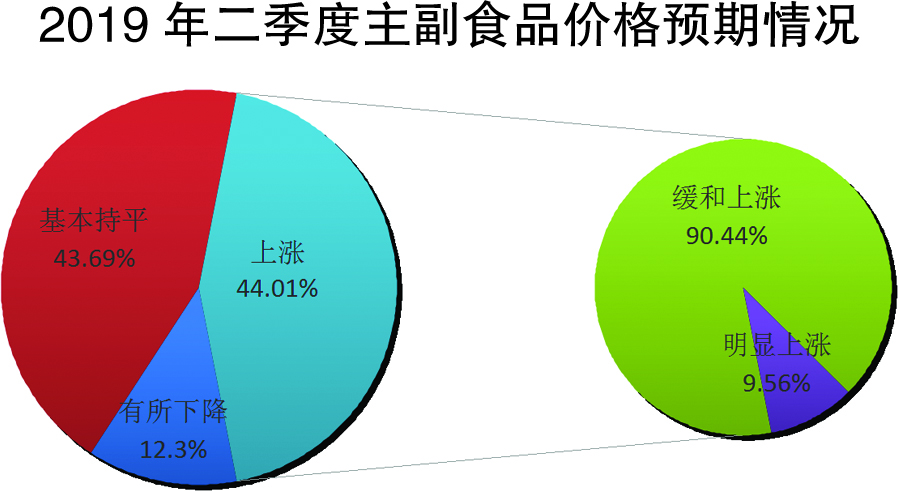
从主副食品价格预期走势看，与上期72.07%的人预计主副食品价格上涨相比，本期明显下降，减少了28.06个百分点；与去年同期的31.22%相比，本期增加了12.79个百分点。
与上期26.43%的人预计主副食品价格基本持平相比，本期大幅上升，增加了17.26个百分点；与去年同期的52.76%相比，本期减少了9.07个百分点。
与上期仅1.5%的人预计主副食品价格下降相比，本期下降预期迅速上升，增加10.8个百分点，但仍保持低位占比；与去年同期的16.02%相比，本期略减3.72个百分点。
调查表明，与上期大多数人预计主副食品价格上涨相比，本期主副食品价格以稳中缓涨预期为主；与去年同期相比，本期主副食品价格上涨预期上升，看平预期下降。
关于大米、食用油和猪肉价格预期情况。本期预计大米价格上涨53人，占比17.15%，其中缓和上涨50人，明显上涨3人，分别占94.34%、5.66%；基本持平243人，占比78.64%；有所下降13人，占比4.21%；无人预计明显下降。预计食用油价格上涨62人，占比20.07%，其中缓和上涨58人，明显上涨4人，分别占93.57%、6.43%；基本持平230人，占比74.43%；有所下降16人，占比5.18%；明显下降1人，占比0.32%。预计猪肉价格上涨142人，占比45.95%，其中缓和上涨117人，明显上涨25人，分别占82.39%、17.61%；基本持平134人，占比43.37%；有所下降32人，占比10.36%；明显下降1人，占比0.32%。
调查结果显示，与上期相比，大米价格继续以平稳预期为主，其中，看平预期有所上升；食用油价格由稳中缓涨预期为主转为看平预期为主；猪肉价格则由缓涨预期为主转为稳中缓涨预期为主。与去年同期相比，大米和食用油价格预期变化不大；猪肉价格预期虽走势一致，但上涨预期大幅上升，下降预期大幅回落。
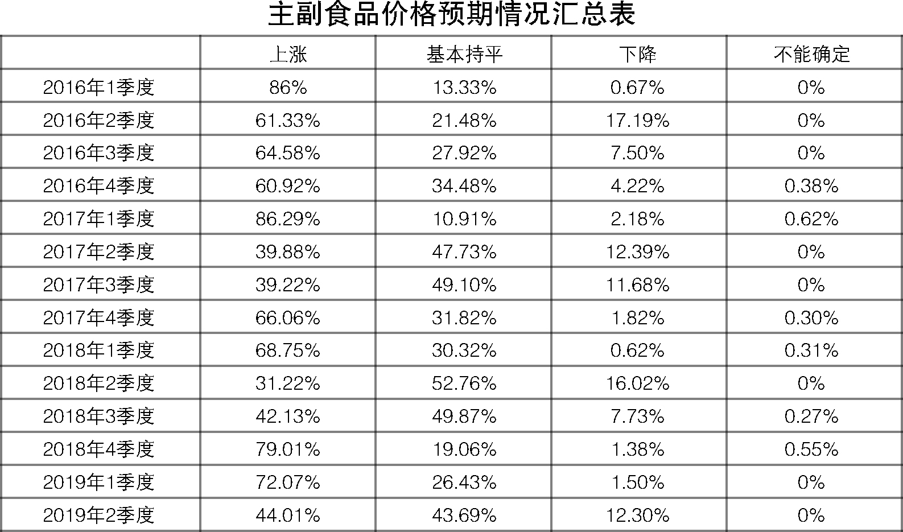
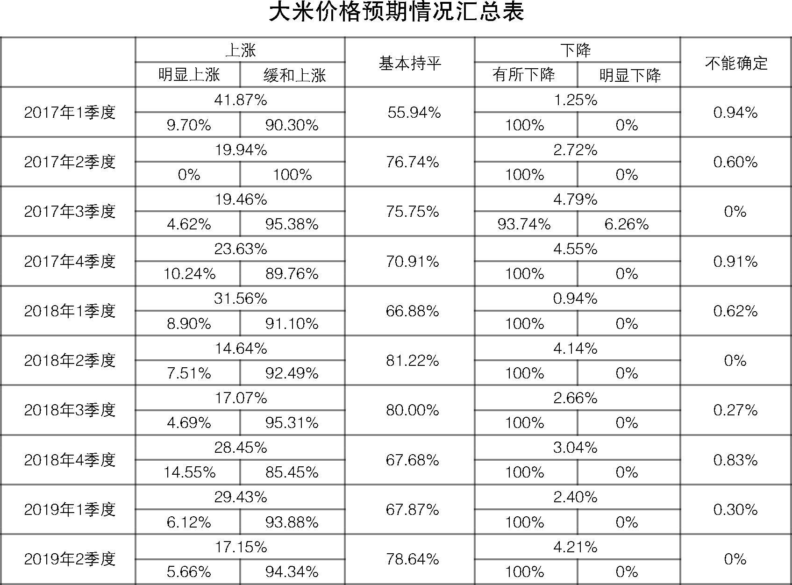
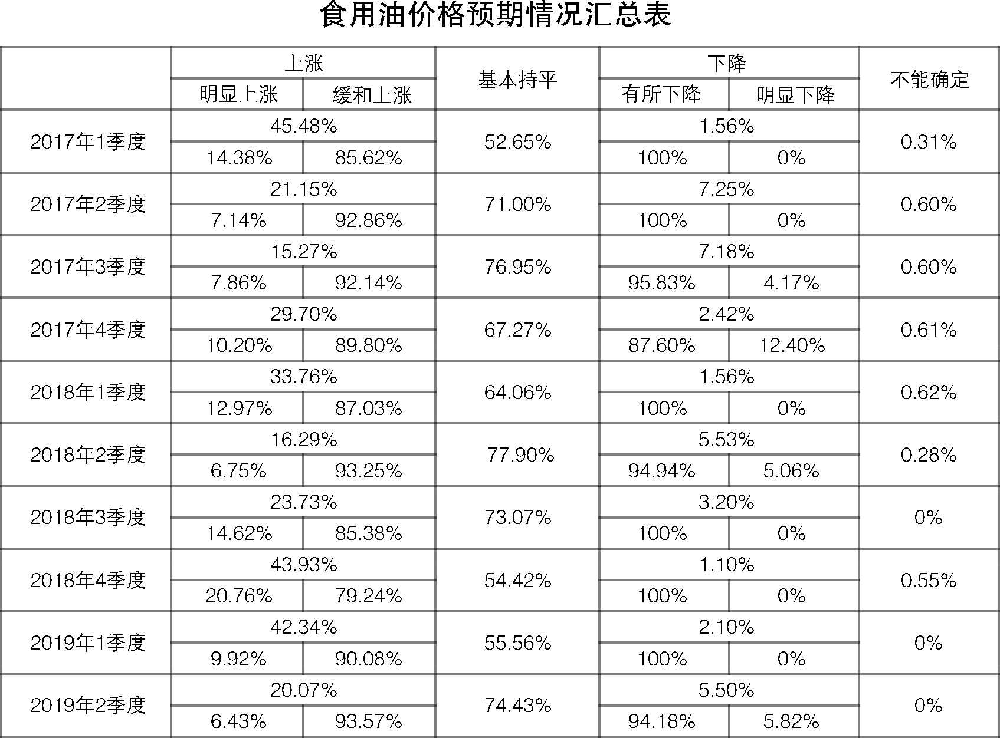
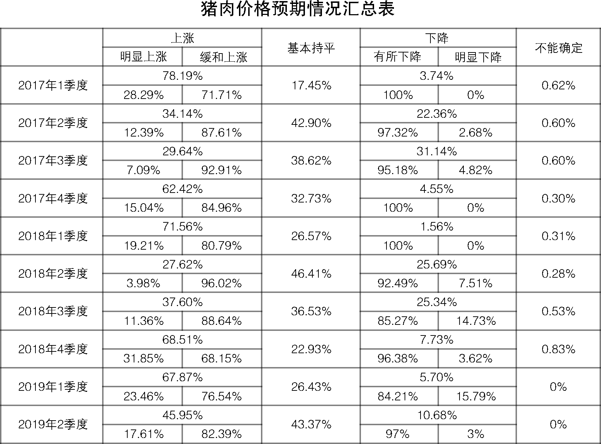
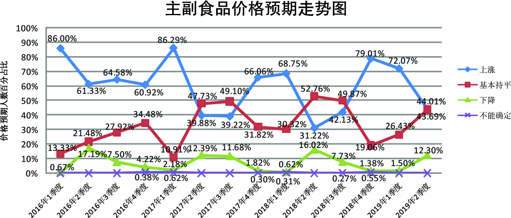
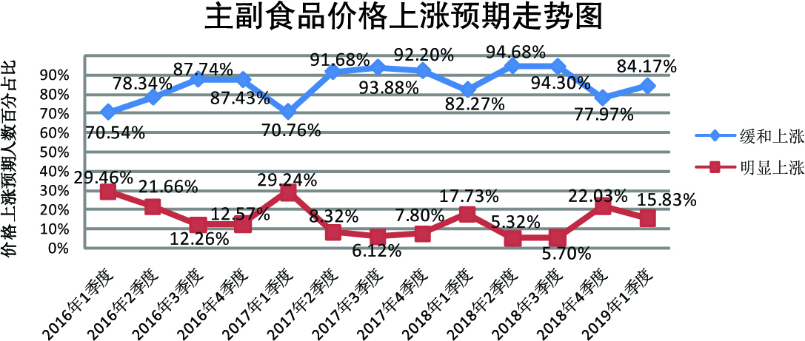
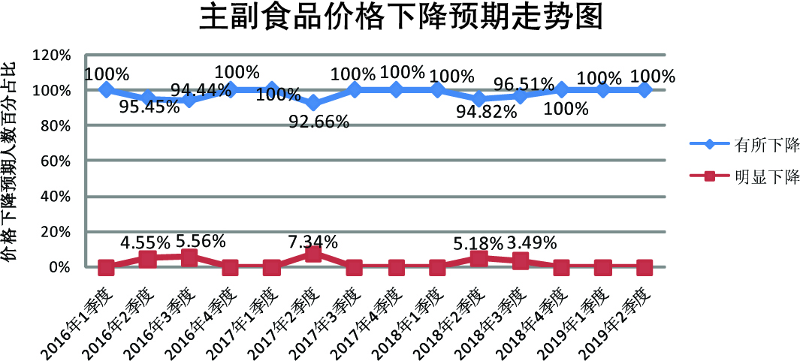
三、商品房价格上涨预期回升，总体预期稳中缓涨
与2019年一季度相比，预计二季度商品房总体价格上涨127人，占比41.1%，其中预计缓和上涨117人、明显上涨10人，分别占92.12%、7.88%；预计总体价格基本持平148人，占比47.9%；预计总体价格有所下降33人，占比10.68%；不能确定1人，占比0.32%；无人预计明显下降。
调查显示，约四成的人预计2019年二季度商品房总体价格上涨，其中，预计缓和上涨的人数超过九成；近五成的人预计商品房总体价格基本持平。超过八成的人预计二季度商品房总体价格稳中缓涨。
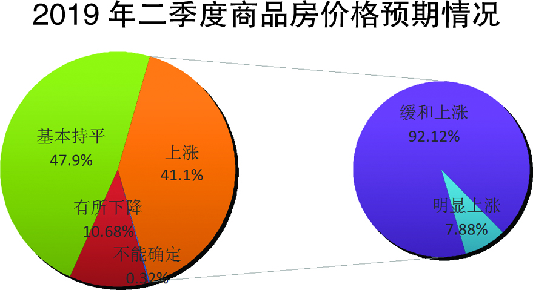
从商品房价格预期走势看，本期商品房价格上涨预期明显回升，较上期的25.53%，增加了15.57个百分点；与去年同期的49.45%相比，本期减少8.35个百分点。
与上期50.15%的人预计商品房价格基本持平相比，本期变化不大，略减2.25个百分点；与去年同期的40.61%相比，本期增加7.29个百分点。
与上期23.72%的人预计商品房价格下降相比，本期下降预期大幅回落，较上期减少13.04个百分点；与去年同期的9.94%相比，本期基本不变，仅增0.74个百分点。
调查表明，与上期相比，本期商品房价格上涨预期迅速回升，下降预期迅速回落，但仍以稳中缓涨预期为主。与去年同期相比，上涨预期有所回落，且均低于历史同期（调查期）的预期。
自2016年实施房地产调控政策以来，房地产泡沫和投机投资需求得到明显抑制，房地产市场价格趋稳。2019年，为进一步缓解房地产销售量、投资量、价格等下行带来的压力，我国和我省部分地区房地产调控政策出现微调和松动，楼市出现回暖，这些对商品房价格的预期产生影响，二季度我省商品房总体价格上涨预期明显回升，但仍低于往年同期，以稳中缓涨预期为主。
从全省各地商品房价格预期情况看，我省商品房价格总体预期继续保持稳定。其中，淮安、盐城、镇江、泰州、宿迁5个市商品房价格以看平预期为主；南京、无锡、徐州、南通4个市商品房价格以稳中缓涨预期为主，其中上涨预期较上期迅速回升，均突破五成；常州、苏州、扬州3个市商品房价格以缓涨预期为主；连云港市商品房价格则以稳中缓降预期为主。值得关注的是，南京、苏州等热点城市商品房价格预期由上期的看平为主转为稳中缓涨和缓涨。这和热点城市限价老盘接连收官，部分区域限价政策正在松动，高价地开发的商品房即将上市，从而影响商品房价格预期有关。
放松不等于放开。地方政府要继续坚持“房住不炒”的房地产政策主基调，落实“因城施策、分类指导”房地产调控政策，根据本地实际，适度把握房地产调控政策的力度和节奏，地方政府出台的城市经济社会发展的相关政策需注意与房地产调控政策衔接配套，协同促进房地产市场平稳健康发展。
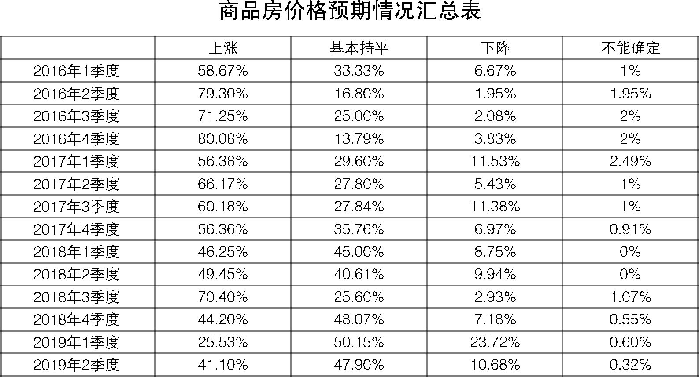
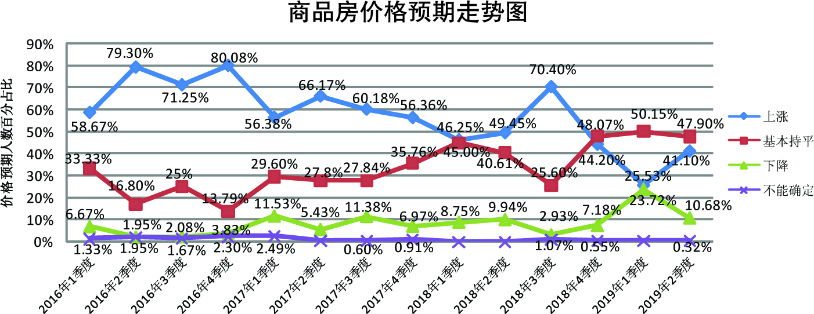
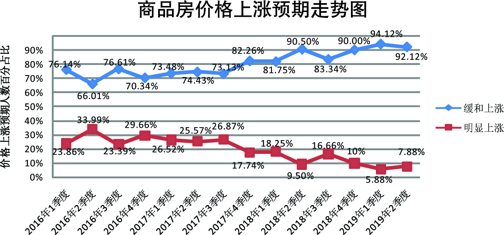
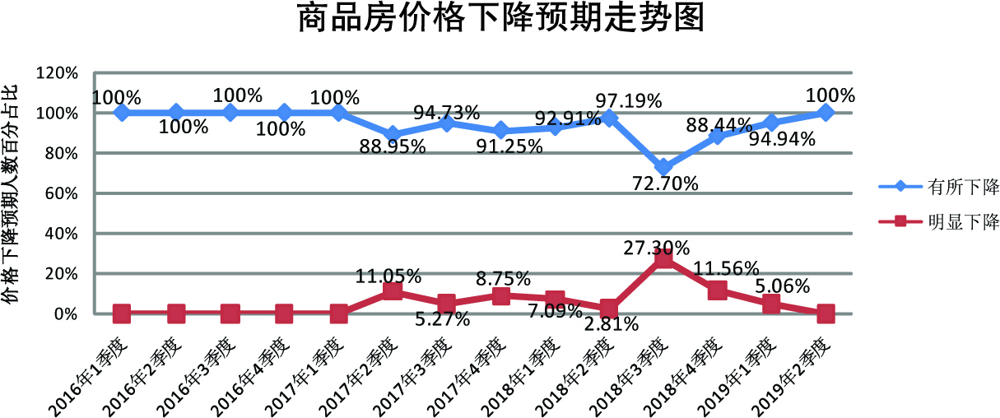